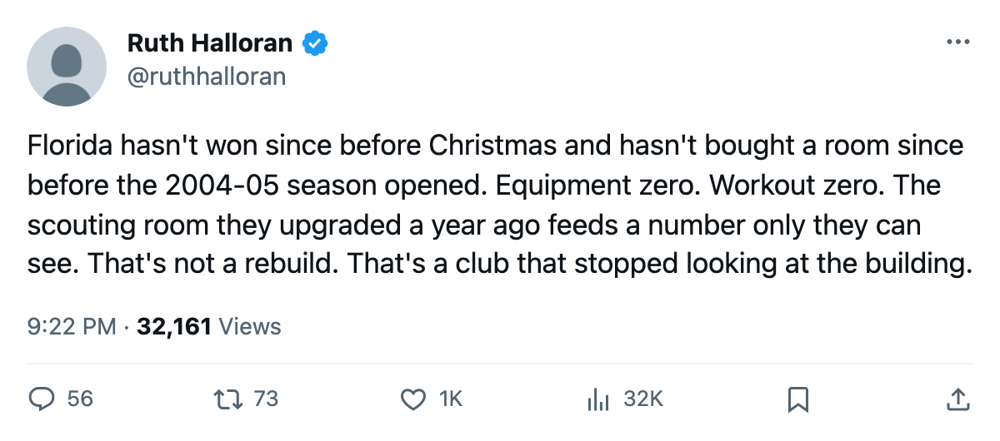
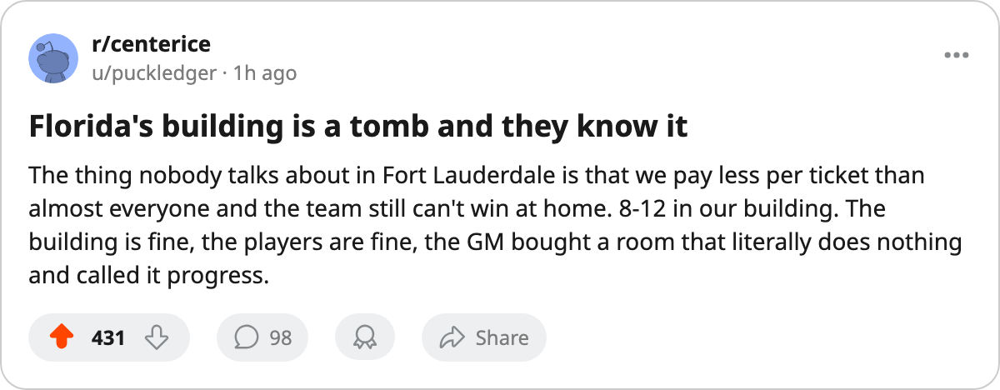

Thirteen Without a Win. The Two Rooms That Cost the Most Sit at Zero.
Florida's winless streak runs alongside a practice rink at Level 1 and a workout room at Level 0. The club has not bought a room since December 2004.
 Ruth HalloranBusiness of hockey · The Building
Ruth HalloranBusiness of hockey · The Building
 Florida Panthers has not won a game since Dec 10. Thirteen games, 0-10-3, 3 points from the last 13 nights. The Panthers are last in the league at 33 points on a $57.60M payroll, and the building costs them 16 attribute points a night across the four tracks that move a rating.
Florida Panthers has not won a game since Dec 10. Thirteen games, 0-10-3, 3 points from the last 13 nights. The Panthers are last in the league at 33 points on a $57.60M payroll, and the building costs them 16 attribute points a night across the four tracks that move a rating.
Equipment: Level 0. Workout: Level 0. Those carry modifiers of -6 and -5, the two most punishing single-room penalties in the tuning table. Florida is one of 6 clubs with a live sum of -16 or worse, and the only one that has not filed a single upgrade in over 12 months.
The last purchase fed a room the pipeline cannot read
The most recent upgrade at Florida Panthers was a scouting room, filed between 2004-12-22 and 2004-12-24. The scouting room carries a curve in the tuning file that nothing in this pipeline reads. It feeds trade valuation, a number nobody outside a club can see. The modifier on the scouting track stays at -1 at Level 1 and does not improve through Level 5 in any way the model registers.
The rooms that move a rating have barely moved. Practice went from 0 to 1 between 2005-05-29 and 2005-05-31, eight months ago. At Level 1 the practice modifier is -4. Travel reached Level 3 (modifier -1) in that same batch. Equipment and workout have not left zero on this record.
Florida reads -3.29 on the ice, averaged over its own roster's ratings in the facility model. Only  New York Islanders at -3.61,
New York Islanders at -3.61,  Boston Bruins at -3.56, and
Boston Bruins at -3.56, and  Mighty Ducks of Anaheim at -3.77 sit worse.
Mighty Ducks of Anaheim at -3.77 sit worse.
What the club earns and what it spends
Revenue sits at $55.41M. Profit is $19.14M. The building holds 14,769 and charges $81 a seat. The money has not become rooms.
Payroll: $57.60M. Points: 33. The rate is $1.75M per point, the 2nd-highest in the league behind San Jose at $2.07M. The only clubs closer to Florida's payroll that produce more are Pittsburgh ($48.92M for 54 points at $0.91M) and Nashville ($51.08M for 55 points at $0.93M).
Boris Van Ryswyk sits 30th of 30 in prestige at 572, the lowest figure in the league. His record reads 11-23-3, 33 points. The prestige column moved +12 since the previous edition, the largest single jump on the table, and the league does not explain how a prestige figure moved.
Morale is high. The model does not care.
Florida's roster averages 95.1 on the Morale Scale, 4th-highest in the league. Only Tampa Bay (98.3), Vancouver and Colorado (both 98.9) sit higher. The locker room at Florida Panthers is Level 4, which carries a modifier of +0 in the tuning file. The tuning file says the locker room moves morale. Nothing in this pipeline reads the locker room's curve, so the 95.1 cannot be attributed to the Level 4, and the -6 on equipment cannot be blamed for anything the Morale Scale shows. The number is in the data. It is not the diagnosis.
The streak in context
The last win was a 3-2 game at  New Jersey Devils on Dec 10. Since then: 4 one-goal regulation losses, 3 OTL, and 6 multi-goal regulation losses. Seven of the 13 went by a single goal or into overtime. Florida is getting outscored in the last five minutes, repeatedly, but it is not being swept off the ice.
New Jersey Devils on Dec 10. Since then: 4 one-goal regulation losses, 3 OTL, and 6 multi-goal regulation losses. Seven of the 13 went by a single goal or into overtime. Florida is getting outscored in the last five minutes, repeatedly, but it is not being swept off the ice.
At home: 8-12. On the road: 7-14. The home edge is thin, and the practice rink at Level 1 costs -4 at home in the rating model, which is most of why the building does not help.
The trade deadline is 68 days away. San Jose, also on a 13-game losing streak at L13, has a live sum of -11 and an equipment room at Level 5, the only club in the league above par on that track. San Jose has rooms that work. Florida has rooms that do not, and no purchase in 13 months.

